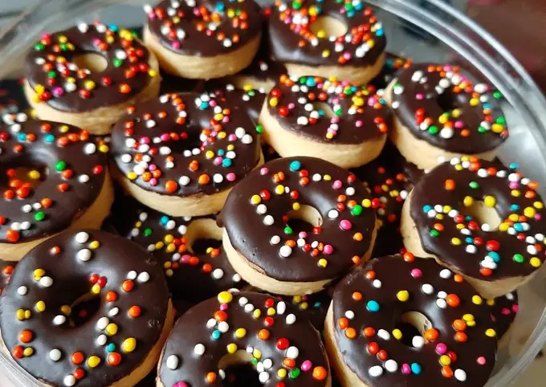

Kue coklat

Bahan-bahan
- 4 Butir telur
- 120 gram gula pasir
- 1 Sdt Emulfisier
- 35 gram coklat bubuk
- 1/2 Sdt garam
- 1/2 Sdt Vanilly bubuk
- 80 ml minyak sayur
- 70 gram DCC/coklat batang
- 1 Sdm margarin
Bahan coklat ganache:
- 200 gram DCC/coklat batang
- 100 ml susu cair
- 1 Sdm margarin
Bahan pelengkap:
- Buttercream secukupnya
- Selai blueberry secukupnya
- Permen mutiara secukupnya
Cara membuat
- Membuat Chocolate Cake : Campur Bahan Kering,Seperti : Tepung Terigu,Coklat Bubuk,Garam,Dan Vanilli Bubuk Aduk Rata.Sisihkan. Kemudian Lelehkan Coklat Dan Margarin,Sisihkan Juga.
- Mix Telur,Gula dan Emulsifier Hingga Mengembang,Kental Berjejak.Masukan Campuran Tepung Sedikit demi sedikit sambil diayak.Aduk dengan kecepatan paling rendah.
- Kemudian Masukan Minyak dan aduk kembali sebentar saja.Matikan Mixer.Masukan Coklat leleh,aduk menggunakan spatula,adukan balik.
- Masukan adonan kedalam loyang yg diolesi margarin dan tepung/dilambari kertas roti (Loyang ukuran 18cm tinggi 8cm).Hentakkan,Kukus Hingga Matang.Jangan Lupa,tutupnya diberi kain,agar uap tidak menetes ke atas kue.Tes tusuk,jika Tidak Lengket angkat dan dinginkan.
- Untuk membuat ganache : panaskan susu cair jangan sampai mendidih, cukup hangat saja.Kemudian masukan coklat,Aduk hingga meleleh.Kemudian masukan margarin dan aduk terus hingga dingin.Jika Ingin hasil mengkilap,harus sering diaduk ya saat margarin dimasukan.
- Potong kue menjadi 2,olesi dengan selai blueberry dan buttercream. Lumuri semua permukaan kue dengan buttercream.
- Kemudian beri coklat Ganache di atas dan pinggiran kuenya.Kemudian hias sesuai selera.Aku memberi permen mutiara di atas kue.Kue Chocolate enakpun siap dinikmati.
Puding Coklat Susu

Bahan-bahan
Lapisan 1 :
- Susu cair coklat - 500 ml
- Bubuk jelly warna coklat - 20 gram
- Gula pasir - 5 sdm
- Bubuk coklat - 1/2 sdt
- Garam - sejumput
- Extract vanila - 1/4 sdt
Lapisan 2:
Bahan pelengkap:
- Susu cair coklat - 500 ml
- Bubuk jelly warna coklat - 20 gram
- Gula pasir - 5 sdm
- Kuning telur - 1 butir
- Garam - sejumput
- Extract vanila - 1/2 sdt
Cara membuat
Lapisan 1 :
- Dalam wadah masukan susu cair coklat, bubuk jelly, garam, bubuk coklat, dan gula pasir. Aduk hingga bubuk jelly tercampur rata.
- Nyalakan kompor, masak bahan puding dan aduk perlahan.
- Masak hingga bahan puding mendidih atau pinggiran panci berbuih.
- Angkat, biarkan uap panas hilang kemudian masukan kedalam cetakan dengan menggunakan saringan agar puding lebih lembut. Dinginkan.
Lapisan 2 :
- Dalam wadah, masukan susu cair coklat dan bubuk jelly.
- Tambahkan sedikit garam dan gula pasir.
- Nyalakan kompor masak bahan puding sambil terus diaduk perlahan.
- Dalam mangkuk, kocok kuning telur dan ambil satu sendok sayur atau 50 ml bahan puding dari panci ke dalam kocokan telur, satukan lalu kocok hingga bahan puding dan kuning telur tercampur rata, kemudian masukan lagi ke dalam panci dan aduk rata.
- Masak hingga bahan puding mendidih atau pinggiran panci berbuih.
- Angkat, biarkan uap panas hilang kemudian masukan kedalam cetakan dengan menggunakan saringan agar puding lebih lembut. Dinginkan
Donut Cookies
Bahan-bahan
- 100 gr mentega
- 90 gr gula halus
- 1/2 sdt vanilla cair (boleh pakai vanila bubuk ya)
- 200 gr tepung terigu protein rendah
- 25 gr susu bubuk (bisa diganti maizena)
- 1 butir kuning telur
- 1/4 sdt baking powder double acting
Bahan Topping
- 100 gr Coklat batangan (colatta) yang sudah di potong-potong Sprinkle
Cara membuat
- Campurkan mentega dan gula halus (ayak), aduk hingga rata. Kemudian masukkan telur dan vanilla cair, aduk lagi hingga rata.
- Tambahkan secara bertahap tepung terigu (ayak), maizena (ayak), dan baking powder. Aduk hingga rata menggunakan tangan saja sampai adonan dapat dipulung/dibentuk.
- Gilas adonan kira-kira hingga tebalnya 0,5cm. Kemudian cetak menggunakan cetakan kastengel bulat, dan lubangi tengagnya menggunakan sedotan besar. Lalu tata rapih di loyang.
- Oven adonan yang sudah di cetak dengan suhu 150°C api atas bawah selama 15-20menit atau hingga adonan sudah terlihat agak kecoklatan.
- Jika sudah matang, dinginkan kue terlebih dahulu.
- Sambil menunggu kue dingin, buat topping. Panaskan teflon/panci yang diberi air secukupnya. Taruh coklat batangan di mangkuk anti panas dan letakan mangkuk diatas teflon/panci, lalu aduk hingga coklat benar2 meleleh.
- Jika topping sudah siap, celupkan kue ke dalam coklat lalu taburi sprinkle. Lalu diamkan hingga coklat mengeras.
- Donut cookies siap dimakan